A risk engine for portfolios of 500+ positions. It computes Value at Risk by historical, parametric and Monte Carlo methods, Expected Shortfall, beta, marginal risk contributions and factor exposures; estimates covariance with Ledoit-Wolf shrinkage (18% lower estimation error than the sample covariance); and serves results through a FastAPI service with NumPy/C++ numerical kernels, scenario caching and PostgreSQL persistence, evaluating 500+ stress scenarios in about 1.5 seconds. C++, Python, NumPy, SciPy, FastAPI, PostgreSQL. Everything you need for a 30–45 minute quant interview.
Resume bullets this booklet defends
The one-line version. Given a portfolio of hundreds of positions, answer quickly and consistently: how much could we lose on a bad day, which positions drive that risk, what are we exposed to, and what happens in a crisis?
Start with an example. A portfolio worth 100 million has a daily volatility of 1%. Under a normal approximation, its one-day 99% Value at Risk is about million: on 99 days out of 100 the loss should be smaller. Expected Shortfall asks the next question: on the worst 1% of days, how much do we lose on average? About 2.67 million under the same assumptions, and more if returns have fat tails. Marginal risk shows that, say, three technology positions contribute 30% of the risk while holding 12% of the capital. A stress test asks what happens if the 2008 crisis were replayed tomorrow, when correlations jumped and diversification disappeared. The engine computes all of this for 500+ positions, through an API, fast enough to rerun whenever positions or prices change.
The problem it solves. Risk managers and portfolio managers need risk numbers that are statistically sound (the covariance of 500 assets is hard to estimate), comparable across methods (each VaR method has blind spots), decomposed (which positions and factors drive risk) and available on demand rather than in an overnight batch.
Who would use it. Risk managers setting and monitoring limits, portfolio managers checking the risk impact of trades, and quant developers integrating risk into other systems.
Inputs and outputs. Inputs: positions (instrument, quantity, market value), price and return history, factor data and scenario definitions, stored in PostgreSQL. Outputs: VaR (three methods) and ES at chosen confidence levels and horizons, portfolio beta, marginal and component risk per position, factor exposures, and stress-test P&L per scenario, served by FastAPI and persisted for audit.
What makes it technically interesting. The mathematics of risk measures and their assumptions; covariance estimation when the number of assets is large relative to history; risk decomposition; and making it fast: vectorised NumPy and C++ kernels, caching and a clean service design.
"I built a portfolio risk engine for portfolios of more than 500 positions. It computes Value at Risk three ways: historical simulation, parametric (variance-covariance) and Monte Carlo, plus Expected Shortfall, portfolio beta, each position's marginal and component contribution to risk, and factor exposures. With 500 assets the sample covariance matrix is very noisy, and singular if history is shorter than the number of assets, so I used Ledoit-Wolf shrinkage, which reduced covariance estimation error by 18% compared with the sample covariance. The engine runs as a FastAPI service: numerical work happens in vectorised NumPy and C++ kernels, scenario results are cached, and positions, scenarios and results are persisted in PostgreSQL. It evaluates more than 500 stress scenarios in about 1.5 seconds."
Scope boundary. Market-risk measurement and stress testing for a portfolio of 500+ positions. Not credit or liquidity risk, not regulatory capital, and not claimed production-ready; "real-time" means on-demand recomputation fast enough for interactive use.
No code, data or benchmark logs for this project are in the Resume Prep folder, so every resume number is marked UNVERIFIED: your reported result, with the evidence needed to defend it. Numbers in worked examples are ILLUSTRATIVE. Items marked [confirm] are standard choices assumed to explain the bullets.
Confirm before interviewing. (1) How "covariance estimation error" was measured: Frobenius distance to a known true covariance in simulation, or out-of-sample accuracy against realised covariance or realised portfolio variance; and the shrinkage target. (2) The 1.5 s benchmark: hardware, warm or cold cache, linear (sensitivity-based) or full revaluation, and whether API and database time are included. (3) Instrument types: if all positions are linear (equities), stress P&L is a matrix product; options would need full repricing. (4) Wording: "500 stress test" should read "500 stress tests". (5) Confidence levels, horizons and history window used.
| Resume bullet | Concepts you must be able to explain |
|---|---|
| 1. 500+ positions; VaR, ES, beta, marginal risk, factor exposures | Returns and volatility, covariance and correlation, portfolio variance, VaR, ES, beta, marginal and component risk, factor models, diversification |
| 2. Historical, parametric, Monte Carlo VaR; Ledoit-Wolf; −18% covariance error | Three VaR methods, confidence and horizon, sample covariance problems, Ledoit-Wolf shrinkage, measuring estimation error |
| 3. FastAPI, NumPy/C++ kernels, scenario caching, PostgreSQL; 500+ stress tests in 1.5 s | Stress testing, scenario analysis, correlation breakdown, vectorisation, C++ kernels, caching, persistence, performance measurement |
sklearn.covariance.LedoitWolf implements the identity-target version.
Step 1: Load inputs. Positions and market values, return history (for example 1–2 years of daily returns), factor loadings and scenario definitions from PostgreSQL; align dates and handle missing data (new listings, holidays) [confirm window]. Reason: consistent, auditable inputs.
Step 2: Estimate covariance. Sample covariance, then Ledoit-Wolf shrinkage toward a structured target; cache the result and its Cholesky factor. Reason: a stable, invertible matrix for parametric and Monte Carlo VaR and risk decomposition.
Step 3: Compute VaR and ES. Historical: today's exposures times each historical return vector, then empirical quantile and tail mean. Parametric: . Monte Carlo: simulate correlated returns via Cholesky, revalue, quantile and tail mean. Reason: three views of the same risk; disagreement signals model risk.
Step 4: Decompose risk. Portfolio beta as weighted position betas; marginal and component risk from ; factor exposures and factor vs specific risk. Reason: tells the user where risk comes from and what to change.
Step 5: Stress test. Load cached scenario matrices (historical crisis replays and hypothetical shocks); compute for all scenarios in one vectorised product; full revaluation for any non-linear positions [confirm]; report worst scenarios and contributions. Reason: tail events outside the statistical window.
Step 6: Serve and persist. FastAPI validates requests and returns results; results with input versions and timestamps are written to PostgreSQL. Reason: interactive use, reproducibility and audit.
| Claim | What it means and how it is computed | Baseline and what could mislead | Status |
|---|---|---|---|
| 500+ positions | Portfolio size the engine handles | Linear vs non-linear instruments | UNVERIFIED |
| −18% covariance error | Error of Ledoit-Wolf vs sample covariance | Metric (Frobenius vs out-of-sample); simulated vs real | UNVERIFIED; define metric |
| 500+ stress tests in 1.5 s | Wall-clock time for one request evaluating 500+ scenarios | Hardware; warm cache; linear P&L; API/DB included? | UNVERIFIED; show benchmark |
To defend these, bring: the error-measurement experiment (setup, metric, , , repetitions), the benchmark script with hardware and cache state, a timing breakdown (data load, compute, serialisation), and VaR backtest results (exception counts) if available.
1. Three VaR methods instead of one. Why: each has different blind spots (parametric assumes normality; historical is limited to its window; Monte Carlo depends on its model); comparing them exposes model risk. Alternative: a single parametric VaR. Trade-off: more computation and more numbers to explain.
2. Report Expected Shortfall alongside VaR. Why: VaR ignores tail severity and is not subadditive; ES is coherent and captures how bad the worst days are. Alternative: VaR only. Trade-off: ES needs more tail data and is harder to backtest.
3. Ledoit-Wolf shrinkage instead of the sample covariance. Why: with 500 assets and limited history the sample matrix is noisy or singular; shrinkage gives a well-conditioned, more accurate estimate with a closed-form intensity. Alternative: sample covariance, or a full factor risk model. Trade-off: introduces bias toward the target; a factor model would add interpretability.
4. Euler risk decomposition. Why: contributions sum exactly to total risk, so reports are consistent and actionable. Alternative: standalone position risk, which ignores correlation. Trade-off: contributions depend on the covariance estimate and are local (valid for small changes).
5. Vectorised NumPy plus C++ kernels. Why: risk maths is linear algebra; vectorisation keeps it in optimised compiled code, and C++ covers loops that NumPy cannot express efficiently. Alternative: pure Python loops. Trade-off: two languages and a binding layer.
6. FastAPI service with caching and PostgreSQL. Why: on-demand risk for other systems, consistent typed interfaces, cached expensive intermediates, auditable persisted results. Alternative: batch scripts writing files overnight. Trade-off: service complexity and cache-invalidation logic.
"I built a risk engine for portfolios of 500-plus positions. It answers four questions: how much could we lose on a bad day, how bad is the tail, where does the risk come from, and what happens in a crisis. For the first it computes Value at Risk three ways: historical simulation, parametric and Monte Carlo. For the tail it computes Expected Shortfall. For attribution it computes portfolio beta, each position's marginal and component risk, and factor exposures. For crises it runs stress scenarios.
The key statistical issue is covariance. With 500 assets there are 125,000 covariance entries to estimate, and with a year or two of data the sample matrix is noisy or even singular. I used Ledoit-Wolf shrinkage, which blends the sample covariance with a structured target, and reduced estimation error by 18%.
It runs as a FastAPI service with NumPy and C++ kernels, cached scenarios and PostgreSQL persistence, and it evaluates more than 500 stress scenarios in about 1.5 seconds."
"Risk measures. Portfolio variance is w-transpose Sigma w. VaR at 99% is the loss exceeded on only 1% of days; Expected Shortfall is the average loss on those days. ES matters because VaR says nothing about how bad the tail is and isn't subadditive.
Three VaR methods. Historical applies the last few hundred days of actual returns to today's positions and takes the empirical quantile: no distributional assumption, but only the history in the window. Parametric assumes normal returns: z times portfolio volatility. It's fast but understates fat tails. Monte Carlo simulates correlated returns from a model using a Cholesky factor of the covariance, which handles non-linear instruments but depends on the model.
Covariance. With N assets and T days, the sample covariance has rank at most T minus 1. With 500 assets and one year of data, it's singular, so some portfolios appear riskless. Ledoit-Wolf shrinks it toward a structured target with an intensity chosen analytically to minimise expected error. That reduced estimation error by 18% compared with the sample covariance.
Decomposition. Marginal risk is the derivative of portfolio volatility with respect to each weight, Sigma w over sigma p; component risk is weight times marginal risk, and the components sum to total risk. Factor exposures are B-transpose w, which separates factor and specific risk. Beta is the weighted sum of position betas.
Stress and performance. Stress scenarios, historical crisis replays and hypothetical shocks, are stored as a scenario matrix. For linear positions all scenarios are one matrix-vector product. Scenario data and covariance factors are cached; FastAPI serves requests and PostgreSQL stores inputs and results for audit. More than 500 scenarios run in about 1.5 seconds."
"I'll go deeper on VaR assumptions, the covariance problem, decomposition, stress testing and the engineering.
VaR assumptions. Each method has a failure mode. Parametric assumes normality and stable covariance, so it underestimates fat-tailed losses. Historical assumes the window is representative: a calm window misses crises, and the estimate jumps when a big day enters or leaves the window. Monte Carlo is only as good as its distribution; a multivariate t is a common improvement over the normal. Square-root-of-time scaling to ten days assumes independent returns. And any VaR model should be backtested: at 99%, about 2.5 exceptions per year, with Kupiec's test for whether the count is plausible.
Covariance estimation. We estimate N times N plus 1 over 2 parameters from N times T observations, about 125,000 parameters for 500 assets. Random-matrix theory says that when N over T is not small, sample eigenvalues are spread out: the largest too large, the smallest too small. That makes the smallest-risk directions look safer than they are. Ledoit-Wolf computes delta times a target plus one minus delta times the sample, with delta minimising the expected Frobenius distance to the true matrix, available in closed form. Measuring the 18% properly needs either a simulation with a known true matrix or an out-of-sample test, such as comparing predicted and realised portfolio variance.
Decomposition. Because volatility is homogeneous of degree one in the weights, Euler's theorem makes component contributions sum exactly to total risk. It identifies positions whose risk share exceeds their capital share, and hedges, which have negative contributions. A factor model gives a second decomposition: factor versus specific risk and exposure by factor.
Stress testing. VaR is a probabilistic statement calibrated on recent data. Stress tests are conditional what-ifs, especially crisis correlations, when diversification breaks down. For linear positions, P&L under all scenarios is a single scenario-matrix times exposure-vector product; non-linear instruments would need full repricing.
Engineering and the benchmark. The arithmetic for 500 scenarios on 500 positions is a quarter of a million multiply-adds, microseconds. So the 1.5 seconds is dominated by everything around it: loading data, building or fetching scenarios, revaluation, serialisation and the API. Caching helps by keying intermediate results on the versions of positions, market data and scenarios. CPU-heavy work runs outside FastAPI's event loop. I'd state the hardware and whether the cache was warm.
Limitations. It covers market risk only, not liquidity or credit; it isn't production-hardened; and the risk numbers depend on the history window and covariance estimate. Next steps: a full factor risk model, EWMA or GARCH volatility, VaR backtesting reports, and incremental updates when single positions change."
It measures and explains the market risk of portfolios with 500+ positions. It computes Value at Risk by historical simulation, the parametric variance-covariance method and Monte Carlo simulation; Expected Shortfall, the average loss beyond VaR; portfolio beta; each position's marginal and component contribution to risk; and the portfolio's exposures to risk factors. It estimates the covariance matrix with Ledoit-Wolf shrinkage, which reduced estimation error by 18% versus the sample covariance. It also runs stress tests, historical crisis replays and hypothetical shocks, and evaluates more than 500 of them in about 1.5 seconds. It is exposed as a FastAPI service, with heavy numerics in vectorised NumPy and C++ kernels, cached scenario data and PostgreSQL storing positions, scenarios and results. It is a market-risk engine for interactive use, not a production-certified risk system.
VaR is a loss threshold that is exceeded only with a given small probability over a given horizon: "1-day 99% VaR of 2.33 million" means that on 99 days out of 100 the portfolio should lose less than 2.33 million. Formally, it is the -quantile of the loss distribution. Example with the parametric method: portfolio value 100 million, daily volatility 1%, 99% confidence (): M, ignoring the small expected daily return. Two parameters define every VaR figure, confidence level and horizon, and must always be stated. VaR is popular because it is one intuitive number for limits and reporting. Its key weakness is that it says nothing about how large losses are when the threshold is exceeded, which is why I also compute Expected Shortfall.
Expected Shortfall (also called Conditional VaR) is the average loss on the days when the loss exceeds VaR: . With the same example (100 million, 1% daily volatility, normal returns), 99% ES is about 2.67 million versus VaR of 2.33 million; with fat-tailed returns the gap is larger. ES matters for two reasons. It measures tail severity: two portfolios with identical VaR can have very different worst-case losses, for example one that sells deep out-of-the-money options. And it is coherent, in particular subadditive: the ES of a combined portfolio never exceeds the sum of the parts, consistent with diversification, while VaR can violate this. That is why regulators moved trading-book capital to ES. Its drawbacks are that it needs more tail data and is harder to backtest.
All three estimate the distribution of tomorrow's portfolio P&L and read off a quantile. Historical simulation applies each of the last days' actual asset returns to today's positions, giving hypothetical P&Ls, and takes the empirical 1% quantile; it makes no distributional assumption and keeps real fat tails and correlations, but it can only see what happened in the window. Parametric assumes returns are normal with covariance , so ; it is instant and analytic but underestimates tail risk when returns are fat-tailed, and it suits linear portfolios. Monte Carlo draws thousands of correlated return scenarios from a model, typically via a Cholesky factor of , revalues the portfolio and takes the quantile; it handles non-linear instruments and alternative distributions but is slower and only as good as its model.
Portfolio variance is , where holds the weights and the covariance matrix. The diagonal terms are each position's own variance; the off-diagonal terms capture co-movement. Diversification is the effect of off-diagonal terms smaller than the product of volatilities: two assets with 20% volatility each, equally weighted, give a portfolio volatility of 20% if perfectly correlated, 17.3% at correlation 0.5 and 14.1% at zero correlation. As the number of assets grows, the idiosyncratic part averages out and portfolio variance approaches the average covariance: systematic risk remains. That is why covariance estimation is central to the engine, and why crisis periods, when correlations rise, reduce diversification exactly when it is most needed.
Beta measures the sensitivity of returns to the market: , the slope of a regression of the asset's returns on market returns. A beta of 1.2 means the asset moves about 1.2% for each 1% market move, on average. Portfolio beta is simply the weighted sum of position betas, , which makes it cheap to update when positions change. It is used for hedging: shorting index futures with notional of about times portfolio value removes the linear market exposure. Caveats: betas estimated from a year of daily data are noisy, especially for illiquid stocks, and change over time; shrinking estimates toward 1 helps. A beta of zero does not mean no risk; idiosyncratic, sector and other factor risks remain, which the factor exposures and risk contributions capture [confirm market index and window].
The marginal risk contribution of position is how much portfolio volatility changes for a small increase in that position: . The component risk contribution is . Because volatility is homogeneous of degree one in the weights, Euler's theorem guarantees the components sum exactly to total portfolio volatility. In a report, each position's percentage contribution, , shows where risk comes from. A small position can contribute a lot if it is volatile or highly correlated with the rest; a hedge contributes negatively. Practical use: to cut risk most efficiently, trim positions with the largest marginal contribution per unit of expected return. The same decomposition applies to parametric VaR by scaling with , and can be aggregated by sector or factor.
A factor model explains asset returns with a few common drivers: , where holds each asset's loadings on factors such as the market, sectors, size, value or momentum, the factor returns and stock-specific returns. The portfolio's exposures are : for example, 0.9 to the market, +15% net to technology, −0.3 to value. They answer "what am I really betting on?", which position-level views hide: twenty different stocks may all be the same growth bet. The model also splits risk into factor risk, , and specific risk, , and gives a structured covariance estimate with far fewer parameters than the full matrix. Risk managers set limits on factor exposures, and stress tests can be expressed as factor shocks so every position moves consistently [confirm the factors you used].
Because there are too many parameters for the data. A 500-asset covariance matrix has distinct entries. One year of daily returns gives 252 observations per asset. The sample covariance has rank at most , so it is singular: there exist portfolios that appear to have zero variance, and the matrix cannot be inverted for optimisation or used directly for a Cholesky factorisation. Even with more history than assets, when is not small the sample eigenvalues are distorted: the largest are too large and the smallest too small, so the risk of portfolios concentrated in the "smallest-eigenvalue" directions is underestimated. Optimisers seek out exactly those directions. Using more history reduces noise but brings in stale correlations from different regimes, which is the trade-off shrinkage resolves.
It replaces the sample covariance with a weighted average of and a structured target : . The target has few parameters and is stable: for example a scaled identity matrix (all variances equal to their average, zero correlations) or a constant-correlation matrix (each asset's own variance, one average correlation). The sample is unbiased but noisy; the target is biased but has almost no noise. The shrinkage intensity is chosen to minimise the expected squared Frobenius distance to the true covariance, and Ledoit and Wolf derived a closed-form estimate of the optimal from the data: more shrinkage when data are scarce relative to the number of assets. The result is well conditioned and invertible, with extreme eigenvalues pulled toward the centre, giving more accurate risk forecasts [confirm the target you used].
It means the Ledoit-Wolf estimate was 18% closer to the true covariance than the sample covariance, by some error metric. The metric must be stated [confirm]. In a simulation, you generate returns from a known covariance , estimate both and , and compare Frobenius errors ; an 18% reduction means the shrunk estimate's error is 0.82 times the sample's, averaged over repetitions. On real data the true matrix is unknown, so you compare out-of-sample: estimate on one window, then measure how well each predicts the next period's realised covariance, or how accurately it forecasts the realised variance of test portfolios (for example minimum-variance portfolios, whose risk the sample covariance badly underestimates). The size of the gain depends on : larger when history is short relative to the number of assets.
VaR is probabilistic and model-based: it estimates a quantile of the loss distribution using recent history or a calibrated model, so it describes "normal bad days" under current conditions, with a probability attached (1% of days). A stress test is a conditional what-if with no probability: "if the 2008 crisis returns happened tomorrow" or "if equities fall 20% and volatility doubles", what would this portfolio lose? Stress tests exist because VaR misses what its data do not contain: a calm two-year window has no crash in it, and crisis correlations are much higher than normal ones. They also allow hypothetical events that have never happened, and reverse stress tests find which scenarios would cause an unacceptable loss. The two complement each other: VaR for daily limits, stress tests for tail resilience.
Correlation breakdown is the empirical tendency of correlations between assets to rise sharply in crises: during sell-offs, many assets fall together as investors deleverage and sell whatever is liquid. A portfolio that looked well diversified with average correlation 0.3 in calm periods may behave as if correlations were 0.7 or 0.8 in a crash, so its volatility and losses are much larger than the calm-period covariance implies. Consequences: parametric and Monte Carlo VaR calibrated on calm data understate crisis risk; historical VaR does too if the window has no stress period; hedges based on normal correlations may fail. Responses: stress tests with crisis correlations or historical crisis replays; stressed VaR using a crisis window; exponentially weighted estimates that react faster; and tracking how risk would change under higher correlation.
By making most of the work a single vectorised operation and caching what does not change. For linear positions, the P&L of every scenario is exposures times scenario returns. Stacking scenarios as rows of a matrix gives all P&Ls at once: , one matrix-vector product. For 500 scenarios and 500 positions that is 250,000 multiply-adds, microseconds in NumPy's compiled BLAS. Scenario matrices (historical crisis returns, hypothetical shocks mapped through factor loadings) are precomputed and cached, as are covariance factors. So the 1.5 seconds is mostly everything around the arithmetic: loading positions and data, fetching or building scenarios, any non-linear revaluation, serialising results and the API round trip. I should state the hardware, whether the cache was warm, and what the timing includes [confirm].
FastAPI exposes the engine as an HTTP service: endpoints for portfolio risk and stress runs, with typed request and response models that validate input automatically and generate documentation. Because risk calculations are CPU-heavy, they should run in worker threads or processes rather than blocking the async event loop. PostgreSQL is the system of record: positions, market data snapshots, scenario definitions and every computed result, with timestamps and input versions, so any number in a risk report can be reproduced and audited, and transactions keep results consistent with their inputs. The scenario cache holds expensive, reusable objects: scenario shock matrices, Cholesky factors, factor loadings and, where positions have not changed, previous scenario P&Ls. Cache keys include versions of the inputs so a change in positions, prices or scenario definitions invalidates the right entries [confirm cache technology].
Because risk computation is mostly linear algebra over large arrays, and Python loops are slow, roughly a hundred times slower than compiled code for element-wise work. NumPy pushes operations such as , matrix products for stress scenarios, Cholesky factorisation, random draws for Monte Carlo and quantiles into optimised C and BLAS routines over contiguous memory, often multithreaded. Some logic does not vectorise well: per-instrument revaluation with branching, path-dependent calculations, or custom aggregation and sorting at scale. Those go into C++ kernels exposed to Python, which give control over memory layout and threads. The combination keeps the service code readable in Python while the hot paths run at compiled speed. The engineering lesson is to profile first: in this engine the arithmetic is fast, and I/O and data preparation are usually the bottleneck [confirm which routines are in C++].
Parametric fails when returns are fat-tailed or skewed (most financial returns), so it understates extreme losses; when the portfolio contains options, because P&L is non-linear in returns; and when the covariance estimate is poor. Historical fails when the window does not contain relevant stress (a calm window gives a low VaR right before a crisis), and it exhibits "ghost effects": the estimate jumps when a large loss enters or drops out of the window. It also cannot produce losses larger than history combined with today's positions. Monte Carlo fails when its distributional model is wrong (normal shocks miss fat tails; constant correlations miss breakdowns), and it has simulation noise in the tail unless the number of draws is large. Common to all: square-root-of-time scaling assumes independent returns, and liquidity is ignored. Using several methods and stress tests together reduces the chance of a single blind spot.
Compare each day's VaR forecast with the next day's actual P&L and count exceptions, days when the loss exceeded VaR. At 99% confidence over 250 days, the expected number is 2.5. Kupiec's proportion-of-failures test checks whether the observed count is consistent with the target rate using a likelihood ratio; too many exceptions means VaR is too low, too few means it is too conservative. Christoffersen's test also checks independence: exceptions clustered together suggest the model reacts too slowly to volatility changes. Regulators use a traffic-light system based on exception counts. For ES, backtesting is harder because it is an average beyond the quantile; approaches compare the average loss on exception days with predicted ES. Backtests should use hypothetical P&L (fixed positions) to test the model itself, separately from actual P&L, which includes trading [confirm whether you backtested].
The true covariance is unknown on real data, so you test predictions out of sample. Approach one: estimate and on a training window, then compute the realised covariance over the following window and compare Frobenius distances; realised covariance is itself noisy, so average over many rolling windows. Approach two, often more relevant for risk: build portfolios (random, equally weighted, and especially minimum-variance portfolios), compare predicted variance with realised variance in the next period, and measure the bias and error of the forecasts; the sample covariance badly underestimates the risk of minimum-variance portfolios. Approach three, in simulation: generate returns from a known matrix (for example estimated from a long history) and compare estimators with exact error. The 18% claim should come with which approach, , , and the spread across repetitions [confirm].
The simple rule is square-root-of-time: . It holds if daily returns are independent and identically distributed with zero mean, because variance then grows linearly with time. Problems: volatility clustering means returns are not identically distributed: in a high-volatility period, ten-day risk can be larger than the rule implies, or smaller as volatility mean-reverts; autocorrelation (momentum or reversal) changes how variance accumulates; fat tails do not scale like the normal; and over ten days the portfolio itself would change, through trading or option decay, which a fixed-position scaling ignores. Alternatives are direct multi-day historical VaR using overlapping ten-day returns (fewer independent observations), or Monte Carlo with a volatility model such as GARCH simulated over ten days. Regulatory ten-day VaR historically allowed square-root scaling with caveats.
For non-linear instruments, P&L is not a linear function of underlying returns, so the matrix-product stress engine and normal VaR are wrong, especially for large moves. Options: delta approximation, treating each option as delta times the underlying, which is fast but misses convexity; delta-gamma (second-order Taylor), which captures curvature and works for moderate moves; and full revaluation, repricing each option with its pricing model under each scenario, which is accurate but costly. Monte Carlo and historical VaR then use full revaluation per scenario. Performance strategies: reprice on a grid of underlying moves and interpolate, vectorise pricing across scenarios, cache per-instrument results when inputs have not changed, and move pricing into C++ kernels. Stress tests must also shock volatility, not just prices. My engine's 1.5 s figure likely assumes mostly linear positions [confirm instrument types].
In a crisis, volatility jumps, correlations rise, and liquidity falls. Risk numbers calibrated on equal-weighted history react slowly: historical VaR rises only as crisis days enter the window, and parametric VaR with a long-window covariance lags. That is why VaR exceptions cluster at the start of crises. Responses in the engine: exponentially weighted volatility and covariance so recent observations dominate; stressed VaR using a historical crisis window alongside current VaR; stress tests with crisis correlations and shocks run on demand, which the fast scenario engine makes practical; and monitoring of exceptions so model failures are visible quickly. Beyond measurement, risk is about action: marginal contributions show which positions to cut to reduce risk fastest, and the factor exposures show which hedges, such as index futures for market beta, would be most effective.
Because stale cached results produce wrong risk numbers silently, which is worse than slow results. Each cached object depends on specific inputs: a covariance matrix depends on the return history window and estimator settings; a Cholesky factor depends on the covariance; a scenario P&L depends on positions, the scenario matrix and prices. If positions change but the cache key does not include them, the engine returns yesterday's risk. A robust design keys each cached object by a hash or version of all its inputs, computes dependencies in order (data → covariance → factor → risk), and invalidates downstream entries when an upstream input changes. Persisting results in PostgreSQL with the input versions used allows auditing: any reported VaR can be traced to the exact positions, prices and scenario set. Time-based expiry alone is not enough for correctness, only for memory management.
They solve the same problem, too many parameters, in different ways. Ledoit-Wolf is generic and automatic: no factor data needed, a closed-form shrinkage intensity, guaranteed well-conditioned output. But it gives no interpretation and its targets are simple. A factor model imposes economic structure: with a few factors, giving interpretable exposures, a factor-versus-specific risk split, natural stress testing via factor shocks, and good behaviour for large . But it requires factor definitions and loadings, and errors in the factor structure become bias. In practice they combine well: use the factor model's covariance as the Ledoit-Wolf target, or shrink the factor covariance itself. For a 500-position engine whose users ask "what am I exposed to?", a factor model adds the most value; Ledoit-Wolf is the robust baseline I implemented and compared against the sample covariance.
Statistical: time-varying volatility (EWMA or GARCH) so risk reacts faster; Student- or filtered historical simulation to capture fat tails while staying responsive; a full factor risk model with style factors; and VaR and ES backtesting reports with Kupiec and Christoffersen tests. Coverage: liquidity-adjusted VaR, accounting for the time and cost to exit large positions; non-linear instruments with delta-gamma or full revaluation; and reverse stress testing to find scenarios that breach a loss limit. Engineering: incremental updates (when one position changes, update and contributions without recomputing everything), streaming market data for genuinely real-time recomputation, horizontal scaling of workers, and monitoring of latency and cache hit rates. Process: documentation of model assumptions and limitations, which is essential for model-risk governance.
Portfolio volatility is . It is homogeneous of degree one: scaling all weights by scales volatility by , since . Euler's theorem for homogeneous functions of degree one states . The gradient is , because and the chain rule divides by . Therefore . So component contributions add up exactly to total volatility. The same holds for parametric VaR, which is , and in general for any risk measure that is homogeneous of degree one, including ES, where contributions can be estimated from scenarios as the expected loss of each position on tail days.
Risk engine for 500+ positions: VaR (historical, parametric, Monte Carlo), ES, beta, marginal and component risk, factor exposures. Ledoit-Wolf shrinkage cut covariance estimation error 18% vs sample covariance. Stress tests (historical replays, hypothetical shocks) as ; 500+ scenarios in ≈ 1.5 s. FastAPI service, NumPy/C++ kernels, cached scenarios, PostgreSQL persistence for audit.
PostgreSQL inputs → returns → Ledoit-Wolf Σ (cached, Cholesky) → VaR ×3 + ES → beta, MRC/CRC, factor exposures → cached scenarios → stress P&L → FastAPI response → persisted results.
| Metric | Definition |
|---|---|
| VaR 99% (normal) | |
| ES 99% (normal) | |
| Beta | |
| MRC | |
| Error | (confirm) |
Market risk only; normal/linear assumptions in parts; window dependence; correlation breakdown; non-linear instruments need repricing; benchmark conditions and error metric to confirm; not production-certified; numbers UNVERIFIED.